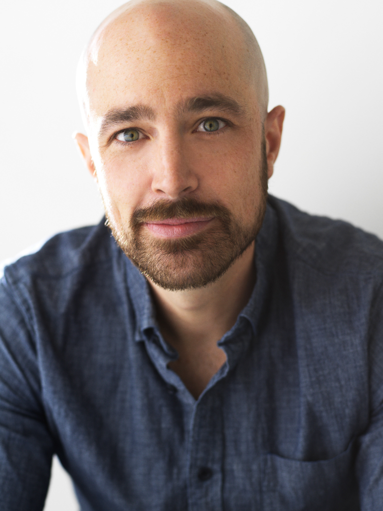

For Review: These biographies are pending approval before being linked from the main site. Please review each bio for accuracy and let me know of any corrections or adjustments needed.

Zachary Altman
Founder, Altman Artists
Zachary Altman brings to artist management a unique perspective forged through an international performing career as a bass-baritone across Europe's most distinguished opera houses.
Prior to founding Altman Artists, Mr. Altman maintained an active international career with leading roles at Opéra National du Rhin, Teatro dell'Opera di Roma, Hamburg Staatsoper, Maggio Musicale Fiorentino, Komische Oper Berlin, Opéra de Lyon, Teatro La Fenice, Teatro Massimo di Palermo, Royal Danish Opera, Scottish Opera, Opera Vlaanderen, and Theater Basel. In the United States, he appeared with Opera Philadelphia and served as Principal Resident Artist with Opera San Jose from 2012 to 2014.
His concert engagements included performances with the Cleveland Orchestra, Czech Philharmonic, Los Angeles Philharmonic at the Hollywood Bowl, and the Boston Symphony at Carnegie Hall. These experiences across major international stages provide Mr. Altman with firsthand understanding of what artists require to build and sustain meaningful careers.
Mr. Altman's early career development included young artist positions with Fort Worth Opera and Sarasota Opera. He received recognition from the Marilyn Horne Foundation and advanced in the Metropolitan Opera National Council Auditions, experiences that inform his approach to nurturing emerging talent today.
He received his graduate degree from Manhattan School of Music, where his roles included Joe Harland in the world premiere recording of John Musto's Later the Same Evening, released on Albany Records.
The transition from performer to representative reflects Mr. Altman's commitment to the art form from a new vantage point. Having navigated the complexities of an international opera career, he now applies that knowledge to advocating for artists at every stage of their development.
Barbora Horáková
Director
Honored as Newcomer of the Year at the 2018 International Opera Awards in London, Czech director Barbora Horáková has rapidly emerged as one of the most compelling voices in contemporary opera directing, with productions at the Vienna State Opera, Staatsoper Berlin, Semperoper Dresden, Dutch National Opera, English National Opera, and Theater an der Wien.
Since the 2019/20 season, Ms. Horáková has served as House Director at Hanover State Opera. Her upcoming engagements include Madama Butterfly at Grand Théâtre de Genève and Die Zauberflöte at the Wiener Staatsoper. Recent productions include Le nozze di Figaro and Reimann's Lear at the National Theatre Prague, and Peter Grimes at Dutch National Opera.
Ms. Horáková's directorial work spans an impressive range of repertoire. Notable productions include Verdi's Luisa Miller at ENO and Wuppertal, Debussy's Pelléas et Mélisande in Oslo and Basel, Monteverdi's L'Orfeo and Purcell's Dido and Aeneas in Bilbao, Respighi's La bella dormente nel bosco in Lyon, and the double bill of Ravel's L'enfant et les sortilèges and Offenbach's Olympia at Theater an der Wien. Her 2021 Prague Rigoletto was praised for its cutting-edge approach to Verdi's masterwork.
Her work has been recognized with the Ring Award in Graz (2017) for her staging concept of Donizetti's Don Pasquale and the Spanish theatre prize "Los Premios Ercilla" (2019) for best performance. Since 2015, she has collaborated extensively with director Calixto Bieito, adapting his productions of From a House of the Dead, Tannhäuser, Britten's War Requiem, and Zimmermann's Die Soldaten throughout Europe.
Born in Prague, Ms. Horáková began her artistic journey as a singer, studying at the conservatoires in Basel and Geneva. As a member of the Swiss International Studio, she received several competition prizes before turning to opera directing at the Bayerische Theaterakademie.
Nicole Chevalier
Soprano
American dramatic coloratura soprano Nicole Chevalier made her international breakthrough at the 2019 Salzburg Festival as Elettra in Mozart's Idomeneo under Teodor Currentzis and Peter Sellars, a performance that established her among the leading singing actresses of her generation.
In the 2023-24 season, Ms. Chevalier made her Wiener Staatsoper debut in the title role of Aribert Reimann's Medea, following house debuts at Teatro Real Madrid as Eva in Laurent Pelly's new production of Die Meistersinger and the title role of Thea Musgrave's Mary, Queen of Scots at Oper Leipzig. She has since undertaken the title role in Rusalka at Deutsche Oper am Rhein, with upcoming debuts in Norma and Salome.
Her international profile includes debuts at Royal Opera House, Covent Garden as Vitellia in La clemenza di Tito and Donna Elvira in Don Giovanni; Staatsoper Berlin for Don Giovanni; and Festival d'Aix-en-Provence, where she returned as Elettra (2022) and Despina (2023). At ENO, she performed a staged one-woman show of Górecki's Symphony of Sorrowful Songs and most recently appeared as Violetta in Peter Konwitschny's La traviata.
For her performances as all four female leads in Offenbach's Les Contes d'Hoffmann at Komische Oper Berlin, Ms. Chevalier received the German Theatre Prize "Der Faust" (2016). In 2017, she was nominated as "Singer of the Year" by Opernwelt for her portrayal of Reimann's Medea.
From 2003 to 2007, she was a member of Theater Freiburg, and from 2012 to 2017, a member of Komische Oper Berlin. Born in Chicago, Ms. Chevalier studied at Northwestern University and Indiana University Bloomington with Virginia Zeani, continuing at the Juilliard School with Trish McCaffrey. She took master classes with Martina Arroyo, Joan Dornemann, Renata Scotto, and Giorgio Tozzi.
Hailey Clark
Soprano
Winner of the Österreichischer Musiktheaterpreis (Austrian Music Theater Prize) for Best Female Leading Role for her performance as Alma Beers in Brokeback Mountain at Salzburger Landestheater, American soprano Hailey Clark commands an international career spanning the world's most prestigious stages.
Ms. Clark has made notable debuts at Wagner's Bayreuth Festival as Freia in Das Rheingold and at the Royal Concertgebouw in Amsterdam as the Queen of Hearts in the Dutch premiere of Unsuk Chin's Alice in Wonderland with the Netherlands Radio Philharmonic Orchestra. Opernwelt called her "stunning" in Lydia Steier's new production of Halévy's La Juive, in which she subsequently sang the title role of Alcina. Other recent engagements include Gerhilde in Die Walküre with the Dresden Philharmonic, Nedda in Pagliacci with Austin Opera, Rosalinde in Die Fledermaus with Central City Opera, and Fiordiligi in Così fan tutte with Palm Beach Opera.
A two-time regional finalist in the Metropolitan Opera National Council Auditions, Ms. Clark was also a finalist in the 2015 Competizione dell'Opera in Linz and received the Santa Fe Opera's Award for Outstanding Apprentice. Her repertoire spans Mozart heroines to Germanic repertoire and French Grand Opera, including Donna Anna and Donna Elvira in Don Giovanni, Erste Dame in Die Zauberflöte, Micaëla in Carmen, and Anne Trulove in The Rake's Progress.
In fall 2024, Ms. Clark joined Vanderbilt University's Blair School of Music as Assistant Professor of Voice. She holds a Master of Music from the University of Michigan School of Music and a Bachelor of Music from the University of Maryland School of Music.
Beyond classical music, Ms. Clark is an active singer-songwriter, releasing the single "Unraveled" (2023) and her folk EP Sad Girl Songs (2024).
Lindsey Reynolds
Soprano
Praised by Parterre Box for wielding her "sparkling high soprano with precision and dazzle," American soprano Lindsey Reynolds has established herself as a versatile artist equally at home in bel canto, contemporary opera, and world premieres.
In the 2025-26 season, Ms. Reynolds returns to Opera Philadelphia as Contessa di Folleville in Rossini's Il viaggio a Reims in Damiano Michieletto's American debut production, and creates the role of Ashley Devon in the U.S. premiere of Missy Mazzoli's The Listeners. She will also make her New Orleans Opera debut as Adina in L'elisir d'amore and star in the world premiere of She Who Dared at Chicago Opera Theater, singing Mary Louise Smith.
From 2022 to 2024, Ms. Reynolds was a member of the Ryan Opera Center Ensemble at Lyric Opera of Chicago, where she performed Barena in Jenůfa and the Celestial Voice in Don Carlos, and appeared in Le Comte Ory and the world premiere of Proximity. In summer 2024, she captivated international audiences with recitals at the Aldeburgh Festival of Music and the Arts and a concert celebrating the WWII Liberation of Nice.
Ms. Reynolds is the first-place winner of the James Toland Vocal Arts Competition and the Camille Coloratura Awards. She has also received the Young Patronesses of the Opera/Florida Grand Opera Competition, the Hal Leonard Art Song Competition, the National Association of Negro Musicians Competition, the Musicians Club of Women Competition, an Emerging Artist Award from Opera Index, and the Jack Kent Cooke Young Artist Award from From the Top.
A native of New Orleans, Ms. Reynolds holds both Bachelor and Master of Music degrees from the Curtis Institute of Music, where she studied with Julia Falkner.
Elizabeth Reiter
Soprano
Acclaimed for her "rich and silvery" voice (The Boston Globe) and "impressive musical polish" (Opera News), American soprano Elizabeth Reiter has been a member of the Oper Frankfurt ensemble for nearly a decade, establishing herself as a leading interpreter of both classical and contemporary operatic repertoire.
In the 2025-26 season, Ms. Reiter sings Despina in a new production of Così fan tutte and Agnés in George Benjamin's Written on Skin, both at Oper Frankfurt. Recent seasons have seen her debut as Tatiana in Eugene Onegin and the title role in Orff's Die Kluge, alongside acclaimed performances as Asteria in Handel's Tamerlano.
Following two years in the Opern Studio, Ms. Reiter joined the Frankfurt ensemble in 2013/14, where her roles have included Armida in Handel's Rinaldo, Susanna in Le nozze di Figaro, Pamina in Die Zauberflöte, Gretel in Hänsel und Gretel, Valencienne in Lehár's Die lustige Witwe, Anne Trulove in The Rake's Progress, and the title role in Janáček's The Cunning Little Vixen. She created the dual role of Renee/Alice in the German premiere of Olga Neuwirth's Lost Highway.
Ms. Reiter made her professional debut at age sixteen as Young Maria Celeste in the world premiere of Philip Glass's Galileo Galilei, presented at Chicago's Goodman Theatre, Brooklyn Academy of Music, and London's Barbican Centre. A Chicago native, she sang as a child in over 100 performances at Lyric Opera, including La Bohème, Tosca, Carmen, Otello, and Hänsel und Gretel.
She holds a graduate degree from the Curtis Institute of Music and an undergraduate degree from Manhattan School of Music. Additional training includes the Steans Institute at Ravinia, Tanglewood Music Center, Aspen Music Festival, Chautauqua Institution, and the Gerdine Young Artist Program at Opera Theatre of Saint Louis.
Ruby Dibble
Mezzo-Soprano
Described by Opera Today as possessing a "dark-hued, plummy and rich" voice, American mezzo-soprano Ruby Dibble was a 2024 Metropolitan Opera Laffont Competition national finalist and first-place winner of the 2024 Annapolis Opera Vocal Competition.
Ms. Dibble makes her European debut at Oper Frankfurt in the 2025-26 season as Un Musico in Manon Lescaut, followed by role debuts as Mercédès in Carmen and Isaura in Tancredi. She has appeared professionally as Flora in La Traviata with Wolf Trap Opera and Berta in Il Barbiere di Siviglia with Lyric Opera of Kansas City, and covered Cherubino in Le nozze di Figaro at Santa Fe Opera.
OperaWire noted that Ms. Dibble "commands the stage with her powerful voice, agile movements, and captivating presence." Her concert work includes multiple appearances at Philadelphia's Kimmel Center under Yannick Nézet-Séguin and Carnegie Hall engagements, including a solo CityWide recital. Roles performed include Le Prince Charmant in Cendrillon, Dorabella in Così fan tutte, Elle in Poulenc's La Voix Humaine, Carmen in Bel Canto, Sesto in La clemenza di Tito, and Blanche de la Force in Dialogues des Carmélites.
Additional competition recognition includes finalist status at the 2024 Marcella Sembrich International Voice Competition, second place at the 2023 Cooper-Bing Competition, and semifinalist placement in the 2022 and 2023 Lotte Lenya Competition.
Ms. Dibble is a graduate of the Juilliard School (Artist Diploma in Opera Studies), Curtis Institute of Music, and Oberlin Conservatory. Her young artist program experience includes Santa Fe Opera, Wolf Trap Opera, Glimmerglass Festival, and Aspen Music Festival & School. A native of Kansas City, Missouri, she was the Margaret Aull Wynne and Milly E. Wynne Fellow at Curtis.
Theo Hoffman
Baritone
A 2016 Grand Finalist in the Metropolitan Opera National Council Auditions and recipient of the 2018 Sara Tucker Study Grant from the Richard Tucker Music Foundation, American baritone Theo Hoffman brings exceptional artistry to repertoire spanning Mozart and Rossini to contemporary works by Philip Glass, Jake Heggie, and Jonathan Dove.
Mr. Hoffman's 2024-25 season includes his first Metropolitan Opera engagement, covering the Sensor in the season-opening production of Grounded. In 2025-26, he sings Oreste at Paris's Opéra Comique in a new production of Gluck's Iphigénie en Tauride conducted by Louis Langrée. Recent engagements include his debut with Opernhaus Zürich as Momus in Platée and his return to Staatsoper Hamburg for Lescaut in Massenet's Manon.
In 2017, Mr. Hoffman performed Josef K. in the critically acclaimed American premiere of Philip Glass's The Trial at Opera Theatre of Saint Louis. His signature roles include Count Almaviva in Le nozze di Figaro (Opera Theatre of Saint Louis, Israeli Opera, New Orleans Opera), Papageno in Die Zauberflöte (Saint Louis, Los Angeles Opera, Israeli Opera), and Schaunard in La Bohème (Atlanta Opera, Seattle Opera, Sacramento Opera).
The Manhattan-born baritone trained at LA Opera as a Domingo-Colburn-Stein Young Artist and received a 2017 career grant from the Sullivan Foundation. He completed his Pre-College, Bachelor of Music, and Master of Music degrees in voice at the Juilliard School.
Beyond opera, Mr. Hoffman released his debut album Schubert Beatles on January 31, 2025, on the NYFOS label, reflecting his commitment to expanding the boundaries of art song performance.
Szymon Komasa
Baritone
A BBC Cardiff Singer of the World finalist and first-prize winner of the prestigious Giacomo Puccini Competition, Polish baritone Szymon Komasa has established an international career at the world's leading opera houses and concert halls.
Mr. Komasa made his Arena di Verona debut as Schaunard in La Bohème in 2009 and has since appeared at the Semperoper Dresden (Schaunard, Albert in La Juive), Teatro Massimo di Palermo (Demetrius in A Midsummer Night's Dream), and the Polish National Opera in Warsaw. His acclaimed interpretation of the title role in Szymanowski's King Roger has been heard in both Warsaw and at the Semperoper Dresden.
In recital, Mr. Komasa has performed at Carnegie Hall (2012) and Wigmore Hall (2012), demonstrating his equal command of the song repertoire. His operatic roles include Papageno in Die Zauberflöte, Figaro in Le nozze di Figaro, and Pandolfe in Massenet's Cendrillon, alongside works by Bellini, Donizetti, and Verdi. He is equally committed to contemporary repertoire, having successfully performed works by living composers.
His competition successes include the Giacomo Puccini Competition (First Prize, Italy), Marcella Sembrich Competition (First Prize), Gerda Lissner Competition (Second Prize), and Giulio Gari Competition (Grand Prize, USA).
Born in Poznań, Poland, Mr. Komasa began his musical studies on the cello at age seven before turning to voice. He is a graduate of the Karol Szymanowski State Music High School in Warsaw, the Juilliard School in New York, and the Guildhall School of Music and Drama in London.
In a historic first, Mr. Komasa became the first opera singer to appear on the cover of L'Officiel Hommes Poland, bringing classical music to new audiences.
Matthew Anchel
Bass
Hailed by the Wall Street Journal as "a voice to watch" and praised by the New York Times for his "magnetic, deep voice that projected power and authority," American bass Matthew Anchel has sung four seasons on the roster of the Metropolitan Opera while maintaining engagements across Europe and North America.
Mr. Anchel opened the Metropolitan Opera's 2024-25 season as part of the Kill Chain in Grounded. His Met credits include Master of Ceremonies in Cinderella, the Jailer in Tosca, and covering Un moine in Don Carlos, following appearances in The Exterminating Angel, Die Meistersinger von Nürnberg, and Fedora.
International engagements include two seasons with the Oper Stuttgart ensemble (2018-2020), where he performed Bartolo, Benoit, and Crespel/Luther across multiple productions. At Glyndebourne Festival, he covered Sarastro in Die Zauberflöte, and at Santa Fe Opera, he covered Tsar Dodon in The Golden Cockerel. He was an ensemble member at Oper Leipzig (2011-2012) and a young artist at Los Angeles Opera's Domingo-Thornton Program.
A 2013 Grand Finalist in the Metropolitan Opera National Council Auditions, Mr. Anchel has received the George London Foundation Encouragement Award, third place at the Palm Beach Opera Competition, the Judges Award at the Opera Index Competition, and was a finalist in the Loren L. Zachary Competition. In concert, he has appeared as bass soloist in Mahler's Eighth Symphony at Carnegie Hall.
Born into an opera family—his parents are singers Julia Heyer and David Anchel—Mr. Anchel first sang in the Metropolitan Opera Children's Chorus at age six. He holds a Bachelor of Music in Vocal Performance from Manhattan School of Music.
Mr. Anchel maintains an active voice studio and has built a following of over 800,000 on TikTok, bringing classical music to new audiences.